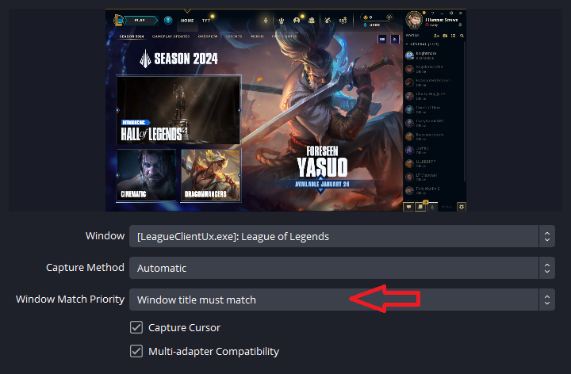
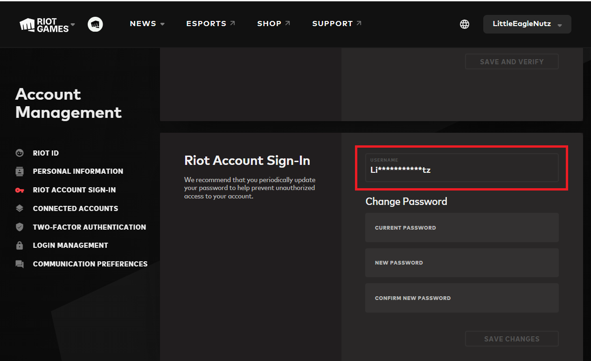
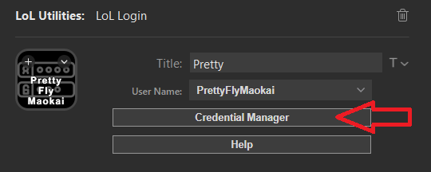

This plugin will enable you to instantly restart League of Legends and login with a specified Riot Account so that you can change accounts quickly without waiting for all of the Riot client processes to exit. Becuase this plugin uses some low level Windows APIs to send data to the Riot Client to log you in, it requires Admin rights.
You may have noticed that you received a User Access Control (UAC) allow request when Stream Deck started the plugin. This is normal, and will happen every time the Stream Deck app restarts. The reason this happens is that Stream Deck does not run with Admin rights. If it did, then every plugin running under Stream Deck would also run with Admin rights and this could cause you to grant permissions to a plugin that doesn't need them or is up to no good. This was the best way I could think of to maintain your security and also provide this functionality.
LoL Login uses Windows Credential Manager to store your Riot account user names and passwords. This ensures that only your accout can access that information. However, LoL Login also has access to any other user name and password stored in Windows Credential Manager, including web site credentials unrelated to your Riot Account. While I have taken precautions to NOT process that data, it is potentially visible to the plugin. Stream Deck itself has access to this data, and uses Windows Credential Manager to store global settings. I was a little surprised to find that there isn't an application specific scoping concept in Windows Credential Manager which would allow an application like LoL Login to only see it's own list of user names and passwords. Given these caveats, I have tried to ensure that your passwords will be as secure as possible.
LoL Login is using some keyboard buffer tricks to send key presses to the Riot Client to log you in. If you click on any other window during the login process, those key presses will be sent there instead. If you are streaming while using this plugin there is a risk that you could click on another visible window and expose your password to your stream. So, once you push that button please wait for the login to complete before you move the mouse or touch the keyboard. At a minimum, setup your streaming software to only capture windows with matching titles and do NOT display the Riot Client login window.

Make sure you set Window Match Priority to "Window Title Must Match"
=
Before you begin, you will need to locate your Riot Account username. You can find this by logging into your account here: https://authenticate.riotgames.com, then you can find the account username in the Riot Account Sign-In section. If you cannot remeber it based on the masked hint shown, log out and use the "Can't Sign In?" link to go to Forgot Username section. You can then email yourself your username. If you signed up with Google, Facebook or other social login, you will need to login with that method first and then setup your Riot Account username and password (see below screenshot) so that the plugin can use it to log you in.

Note, this is not always the same as your Gamer Tag Screen Name shown in the top right corner!
Next, you will need to add your Riot Accounts to the Credential Manager. You can do this by clicking on the Credential Manager button in the plugin settings and entering them all in. There isn't any way to verify if your password is correct, so you will need to press the button to find out if it worked.

Now you will be able to select your Riot Account from the dropdown. You can setup as many accounts as you like, all with their own button. I recommend putting them on their own Stream Deck page so that they are not available until you really want to use one. There are no "Are you sure?" checks, so pressing a LoL Login button in the middle of the game will immediatly kick you out of the game.
I hope you like this plug-in, and it works well for you. It may stop working if Riot changes the layout of the login screen, or if they add another social login button. I will fix it as quickly as possible. If you have any issues, please open a GitHub issue here: . If you would like to contribute to the project, feel free to fork, and submit PRs.
I stream League of Legends nightly at 10pm CT, seven days a week. I hope you will stop by and say hi! :)